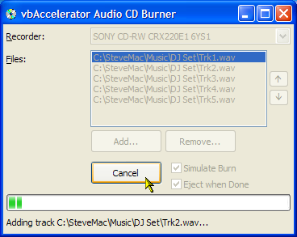
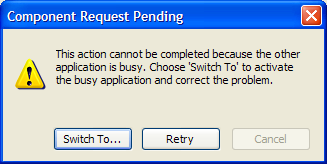

VB5 Audio Burner (81K)
VB5 Audio Burner (81K)
 VB6 Audio Burner (78K)
VB6 Audio Burner (78K)
 12 Jun 2004
12 Jun 2004
First Posted
 Image Mastering API (IMAPI) Library for VB
Image Mastering API (IMAPI) Library for VB
 VB IMAPI (CD Burning) Interfaces (IVBIMAPI.tlb)
VB IMAPI (CD Burning) Interfaces (IVBIMAPI.tlb)
 Using WinAmp In Plugins From VB
Using WinAmp In Plugins From VB

Writing Audio CDs
Burn Audio CDs using IMAPI on XP and above
"Perhaps they were expecting someone to write an audio recorder in Visual Basic?" Paul DiLascia writes, somewhat sarcastically, in the April 2004 issue of MSDN Magazine on the subject of the Image Mastering API. Whether they were expecting it or not, here it is: a VB application which creates audio CDs.
Writing Audio CDs
In the article on IMAPI I demonstrated a wrapper and a simple properties sample showing how to use the CD Image Mastering API provided on XP and above. As noted, the API provides two mastering interfaces for building a CD image; IRedbookDiscMaster for creating audio CDs and IJolietDiscMaster for creating data CDs. This articleshows how to use the audio CD interface.
Assuming you have completed the initial task of picking which songs you want to include on the CD, there are four main steps in creating an audio CD using IMAPI:
- Select a Disc Recorder which supports recording audio CDs; make it the active recorder on the system and set the mastering format to Redbook.
- Determine whether there is an appropriate disc available on the active recorder.
- Build up the CD image by adding tracks and streaming the audio data into the stash.
- Call the RecordDisc method and wait until the BurnComplete event fires.
I'll cover doing these in turn.
1. Selecting a Disc Recorder
In order to select a recorder, you must first have a cDiscMaster instance. Once you have that, then get a RedbookDiscMaster instance, which sets the disc mastering format to audio. You can then select the recorder to use using the Recorders collection:
Private m_cDiscMaster As cDiscMaster Private m_cRedbook As cRedbookDiscMaster Dim cRecorder As cDiscRecorder ' Get an instance of the DiscMaster object: Set m_cDiscMaster = New cDiscMaster m_cDiscMaster.Initialise ' Set the active mastering format to Redbook ' and obtain a Redbook Mastering instance: Set m_cRedbook = m_cDiscMaster.RedbookDiscMaster ' Set the active recorder (nIndex is the 1-based index ' of the recorder you want): m_cDiscMaster.Recorders(nIndex).SetAsActive Set cRecorder = m_cDiscMaster.Recorders.ActiveRecorder ' .. other steps to complete the CD ' Clear up Set cRecoder = Nothing Set m_cRedbook = nothing m_cDiscMaster.ClearUp
Note that any image you stage using cRedbookDiscMaster will be freed if you request the RedbookDiscMaster object again, or if you change the disc mastering format through the JolietDiscMaster method. You should therefore keep a reference to the object until the burn has completed. The image is also freed whenever the cDiscMaster object is released.
2. Checking the Recorder Media
To determine what media is available in the recorder, use the MediaInfo method of the cDiscRecorder object. Note that to get information about the media you must first open the recorder for exclusive access; make sure you close it again otherwise you will get an error when you try to burn the disc:
' Exclusively open the recorder:
cRecorder.OpenExclusive
' Get the media info:
Set cInfo = cRecorder.MediaInfo
' We can close the recorder now:
cRecorder.CloseExclusive
' Check we have media and that it is writable:
If (cInfo.MediaPresent) And _
((cInfo.mediaflags And MEDIA_WRITABLE) = MEDIA_WRITABLE) Then
' ... Staging and burning
End If
3. Building up the CD Image
In order to build up the CD image, you need to have a way of getting chunks of wave data which can be accessed through a memory pointer. In this sample, I've used the cWaveReader class which was introduced in the Wav File Viewer Control. However, any other source of data can be used, provided the data is arranged as a 16-bit stereo 44.1kHz wave file.
The image is staged by adding tracks using the CreateTrack method. This takes the number of blocks for the track as a parameter, although the documentation suggests this is optional. Once the track is open, data is added using the AddAudioTrackBlocks method. Data must be added in chunks of the audio block size, so if the audio is not an even multiple of 2352 bytes (1/75 second) then padding zeros are needed. Finally, once all the data has been added for a track then class CloseTrack. Here's the code for creating one track:
Private Sub addTrack(ByVal sFile As String)
Dim lBlockSize As Long
Dim cWav As cWavReader
Dim lTrackSize As Long
Dim lTrackBlocks As Long
Dim bMore As Boolean
' Get block size:
lBlockSize = m_cRedbook.AudioBlockSize
' Create a WAVE reader and set the buffer size
' to the block size:
Set cWav = New cWavReader
cWav.ReadBufferSize = lBlockSize \ 4
cWav.OpenFile sFile
' Evaluate the number of blocks in the track:
lTrackSize = cWav.AudioLength * 4
lTrackBlocks = lTrackSize \ lBlockSize
If (lTrackSize Mod lBlockSize) > 0 Then
lTrackBlocks = lTrackBlocks + 1
End If
' Create the audio track:
m_cRedbook.CreateAudioTrack lTrackBlocks
' Add audio data until there is none left:
Do
bMore = cWav.Read
If (bMore) Then
lReadSize = cWav.ReadSize * 4
cWav.ZeroUnusedBufferBytes
m_cRedbook.AddAudioTrackBlocks cWav.ReadBufferPtr, lBlockSize
DoEvents
End If
Loop While (bMore)
' Close the track
m_cRedbook.CloseAudioTrack
' Close the wave file:
cWav.CloseFile
End Sub
Whilst adding tracks, you need to determine whether there is enough space on the CD to fit the selected tracks. There are two ways of doing this: you can either precalculate whether the tracks will fit compared to the number of FreeBlocks on the disc (as I have done in this example), or you can stage the image and respond to AddProgress events from the cDiscMaster object, which will notify you of the number of blocks used and blocks available.
Note that a CD must have at least one track and no more than 99 tracks per audio CD; this is part of the Redbook specification. As far as I can tell you cannot set up trick tracks with negative offsets from the start of the CD using this API.
4. Buring the CD
To burn the CD, call the RecordDisc method. This takes two boolean parameters; the first is whether to simulate the record or actually record and the second is whether to eject once recording is complete.
m_cDiscMaster.RecordDisc False, True
The method does not return until the burn has complete and once recording is underway, these events will be fired:
- PreparingBurn
Raised before burning starts. Provides an estimated number of seconds the prepare phase will take before burning commences. - BlockProgress
Raised during burning. Provides the current block being burnt and the total number of blocks to burn. - TrackProgress
Raised during burning as each track is written. The track number provided is a zero-based index of the track about to be written; when this reaches the number of tracks then all tracks have been done. - ClosingDisc
Raised when all the data has been burnt and the disc is being closed. Provides an estimated number of seconds the closing phase will take. - BurnComplete
Raised when the brun is complete. - QueryCancel
Raised regularly during burn. The bCancel parameter can be set to abort the burn.
Issues
There are two issues with this implementation currently; any suggestions for fixing either would be a great help:
- Track Spacing
The spacing between tracks recorded by the sample is hardcoded at 150 blocks (a CD block is 1/75 second so this is 2 seconds). This is the default for audio CDs, but for things like mix CDs you really want to be able to configure the spacing. My recorder exposes a property called "AudioGapSize" but whenever I attempt to set it the new value is ignored. I'm not sure whether this is because the property is read-only, or whether setting properties doesn't work.
- Cannot click Cancel whilst Burning
The Burn method is synchronous, which means it does not return until the CD Burn is complete. Unfortunately, when you make a COM call, VB replaces the application message loop with one that means any keystroke results in the horrific "Component Request Pending" dialog:
My second-least favourite dialog in VB: Component Pending
As usual with this dialog, there is no "other application" and "Switch To" and "Retry" never do anything. Its also stupid because clearly the application is getting the events you want it to; its just intercepting them before they get where they need to go! If there was a way to get at the application message loop then I think you could fix this, but I don't know how to do that in VB. Alternatively, the Burn method could be called on a background thread; but threading of this sort is rather tricky in VB. Perhaps something from Matt Curland's Advanced VB6 book would do the trick?
Suggestions
The sample recorder provided here is intentionally minimal, just being there to demonstrate that you can create an audio CD with this technique. There's quite a few things you could do to improve it:
- A real recorder application would almost certainly have a better UI with a step-based ("inductive") approach to creating a CD, starting with chosing what type of CD you want to create, then picking the files, and then showing a nice progress display whilst the burn was in progress. Then there would be some nice alpha fades and some cute graphics...
- The current sample only allows you to pick stereo WAV files; however, with the code provided in Using WinAmp plugins you can easily extend it to work with MP3, MP4, APE and other file formats too.
- Building up the staging image is a bit slow. Currently, I am adding the audio data in single blocks; however, you can add multiple blocks at the same time which would almost certainly speed things up quite a bit.
- I haven't really looked at CD-RW support in this sample.
Conclusion
This sample demonstrates how to create audio CDs using the IMAPI library. There are a couple of issues with the current sample but hopefully they will be resolved soon.